It was an amazing experience!
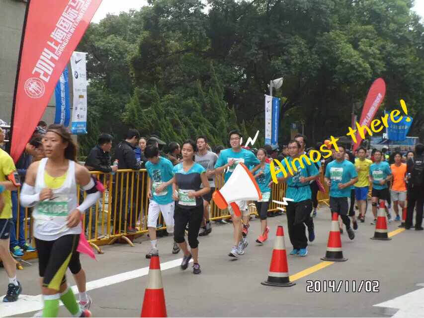 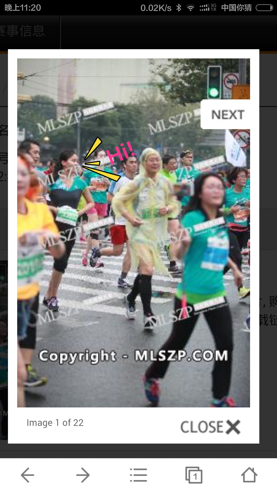 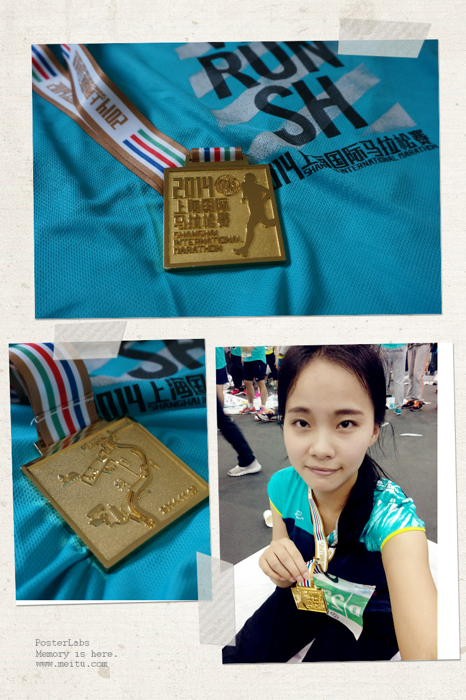 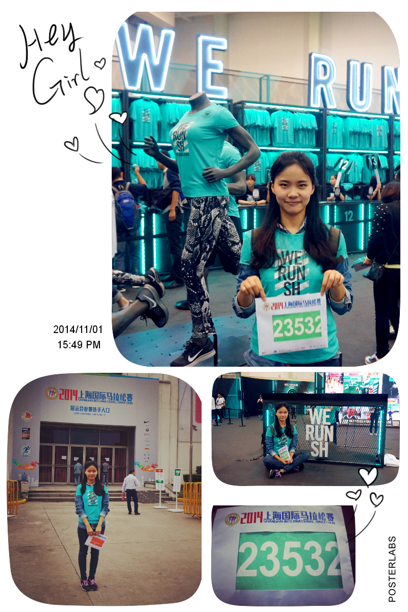 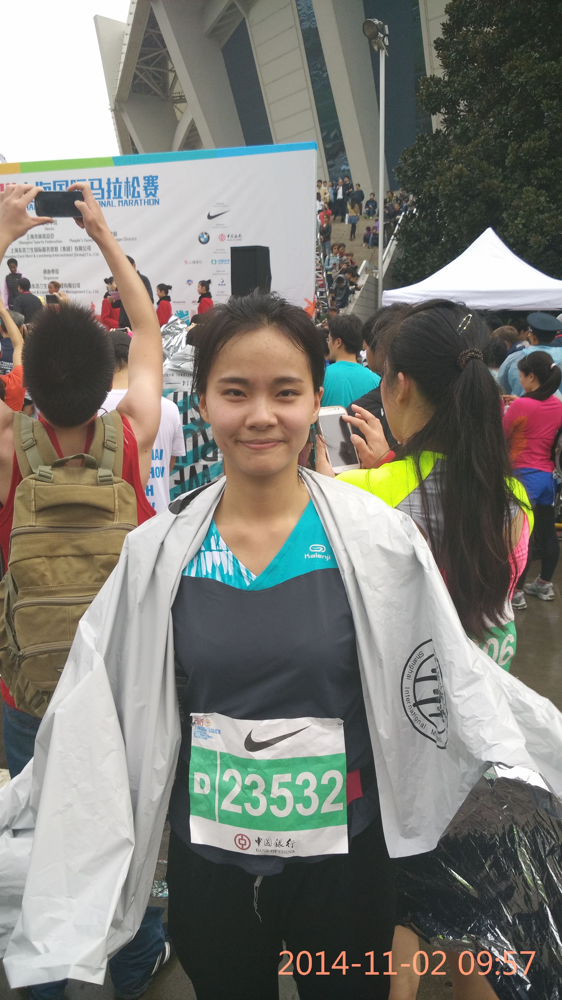 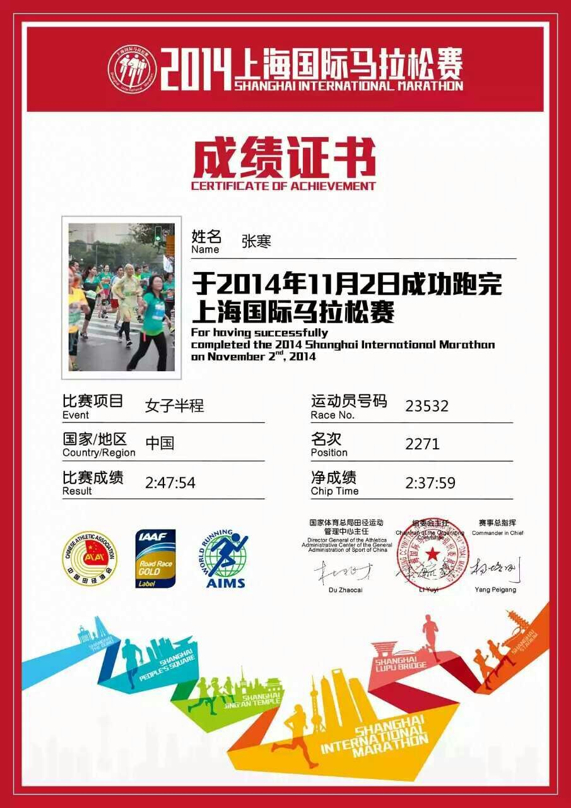
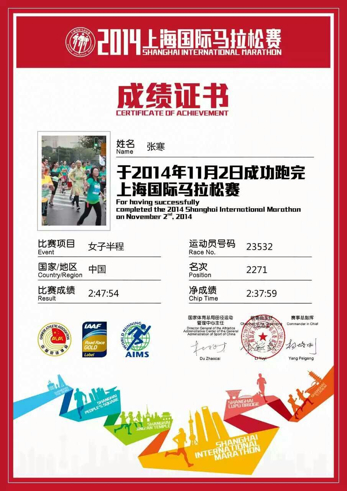
Thanks to the Makisu menu idea
by Justin Windle.
Hi, I'm Han.
Currently, I'm in the thick of pursuing my CS master degree at Lyle School of Engineering, SMU, Dallas.
I am graduating in May 2018, and currently actively looking for a Fulltime positon and a Spring Internship opportunity if possible.
If you have no idea how to play around, follow the steps below:
I was placed at Dallas Afterschool where we helped to sort, assemble, and complete STEM curriculum kits to be used after school, as well as participated in educational, hands-on teambuilding activities! That is also where the friendship of Michelle and I started. That was amazing!
It was an amazing experience!
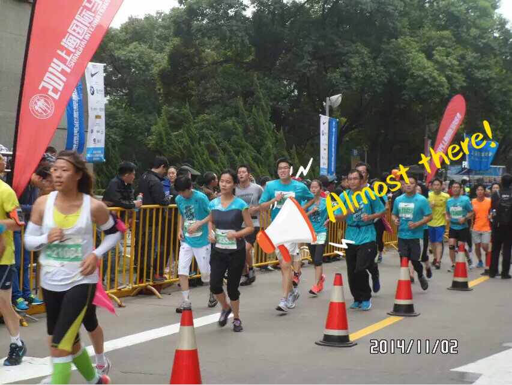 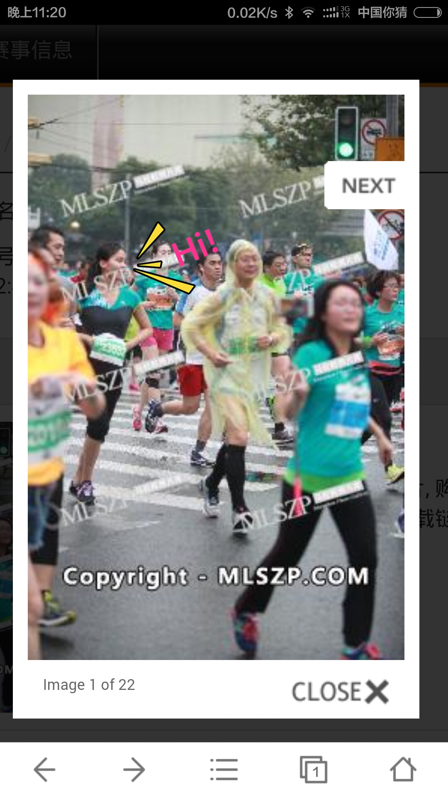 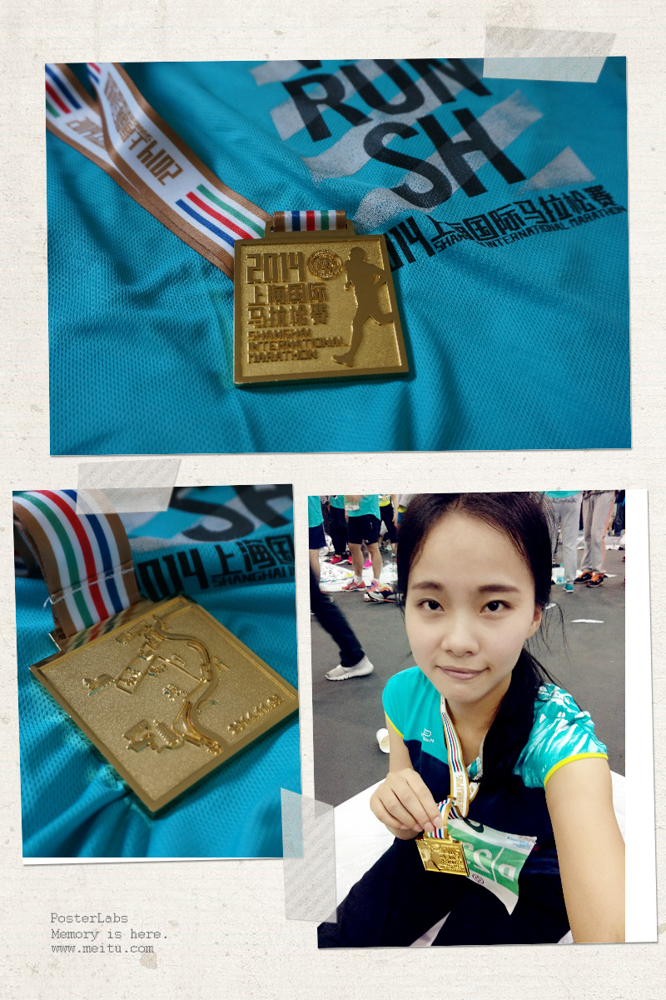 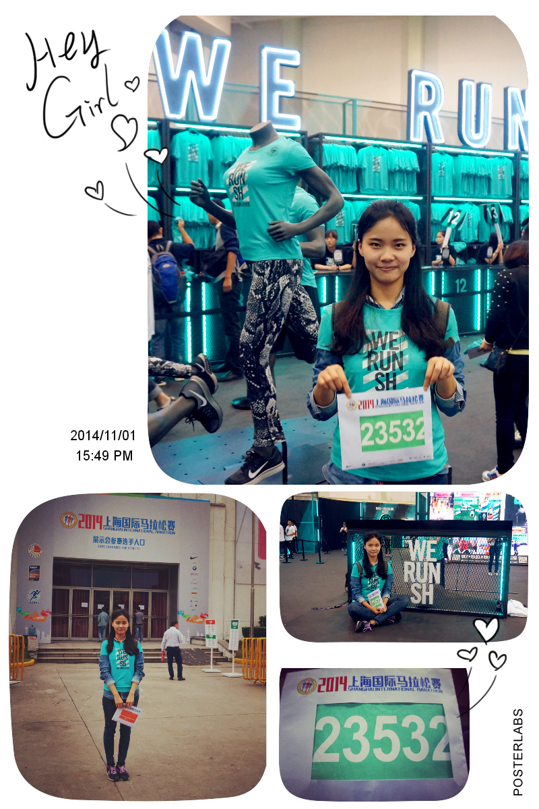 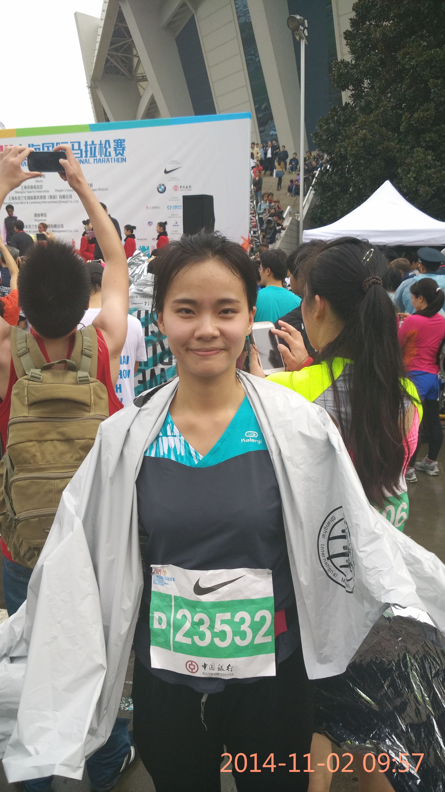
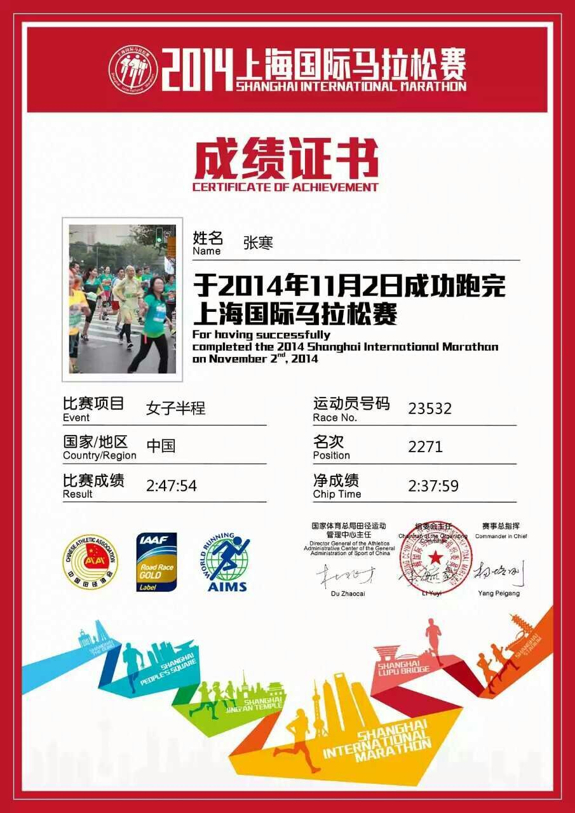
JavaScript, HTML, CSS
In this project, a Wireless Sensor Network(WSN) is firstly set up by generating a random geometric graph with a specified average degree. Then, the Smallest-last Vertex ordering algorithm is implemented for determining the coloring order, which will laterly be used to select the communication backbone of the corresponding WSN. The whole project model and visualize a wireless sensor network(WSN) with each bipartite subgraph providing a communication backbone. You are highly recommanded to go through this process by clicking here or the "Must Try" button on the navigation menu.
I start with exploring three types of dataset, number, text and images.
I will keep adding my latest works to the Jupyter Notebook part.
Electronics Assembly Technologist
at Shanghai Aerospace Equipment Manufacturer, Shanghai, China
Participated in the National Science and Technology Major Project, Technique of MEMS Accelerometer Volume Production and Geophone -- Accelerometer Servo ASIC Development